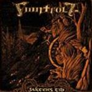

|
|
||
Finntroll : Jaktens Tid (2001) |
|

http://www.finntroll.net |
1. Krig (Intro) 2:09 |
9/10 |
|
De Finlandia nos llega Finntroll con su segundo disco, Jaktens Tid, una original mezcla de black metal, sonidos folk, y aires de polka, donde ¡incluso llegan a usar un acordeón! El resultado es un disco muy interesante y divertido, pero tan extremo y contundente como la voz de Katla puede llegar a ser. Pese a ser finlandeses, el disco está en sueco, lo que dicho sea de paso no es mucho consuelo, porque de sueco se tanto como de finlandés. Vamos, que me voy a centrar en la música, y me olvidaré un poco de las letras... :-P "Krig" es una gran introducción instrumental, lúgubre, siniestra y de resultado ciertamente épico. La segunda canción, "Födosagan" nos aclara por donde va el disco: guitarras contundentes y voz extrema y desgarrada. Los teclados le aportan atmósfera y cuerpo sin restarle ni un ápice de fuerza. La canción tiene también una parte lenta, apoyada en las guitarras sin distorsión. "Slaget vid Blodsälv" acelera el ritmo notablemente. El doble bombo lleva en volandas al resto de los instrumentos, incluyendo al famoso acordeón si el oido no me falla. La combinación de la voz de Katla, con el acordeón y el ataque del doble bombo es tan demoledora como sorprendente. Los teclados aportan interesantes cambios y los coros que aparecen le dan un estilo más épico. El cuarto corte, "Skogens Hämad", mantiene el ritmo trepidante, con riffs creados por las guitarras y adornados con los teclados y la voz sin concesiones. Los aires folk aparecen en las partes instrumentales intercalados con los sonidos más puros del metal. "Jaktens Tid" mantiene la velocidad y la contundencia, aportando un interesante trabajo con las voces. La sexta canción, "Bakom Varje Fura" parece la banda sonora de una película de dibujos animados. Hay que oirla para entender lo que digo. Tras la pausa, la séptima pista, "Kitteldags" retoma la fuerza, aunque algo más lenta que las anteriores. Una canción de ritmo muy marcado, más sonido folk y voz quizás algo menos extrema. "Krigsmjöd" tiene una base más oscura y heavy que las anteriores, aunque los teclados le aportan pasajes más brillantes para contrastar. La siguiente, "VargTimmen", contiene indudables influencias de música nativa norteamericana (y, ¡válgame Dios! no me refiero al country ;-), aunque en líneas generales es otra de las potentes melodías de este álbum. La décima, "Kyrkovisan", es corta pero notablemente contundente, tanto por la voz como por el endiablado ritmo que posee. "Den Hornkrönte Konungen (Rivfaders Tron)" es melódica, contundente, y rápida, aunque con algunos cambios que le dan variedad. "Aldhissla" ofrece la que es quizás la voz más desgarrada del disco, a ritmo moderado y sobre riffs simples pero pegadizos. La última canción es una pequeña instrumental de sonido bastante curioso, que da paso a una cancioncita "secreta" al final de la pista, que resulta básicamente indescriptible, pero que yo diría que es el broche perfecto para el álbum. Aunque el black metal no sea precisamente mi género favorito, tengo que admitir que este álbum me ha gustado bastante. Un gran trabajo, de los que gustará a mucha gente no sólo a los seguidores del black metal, de sonido original y sorprendente, que vale la pena escuchar. |
||
Rubén Béjar |
||